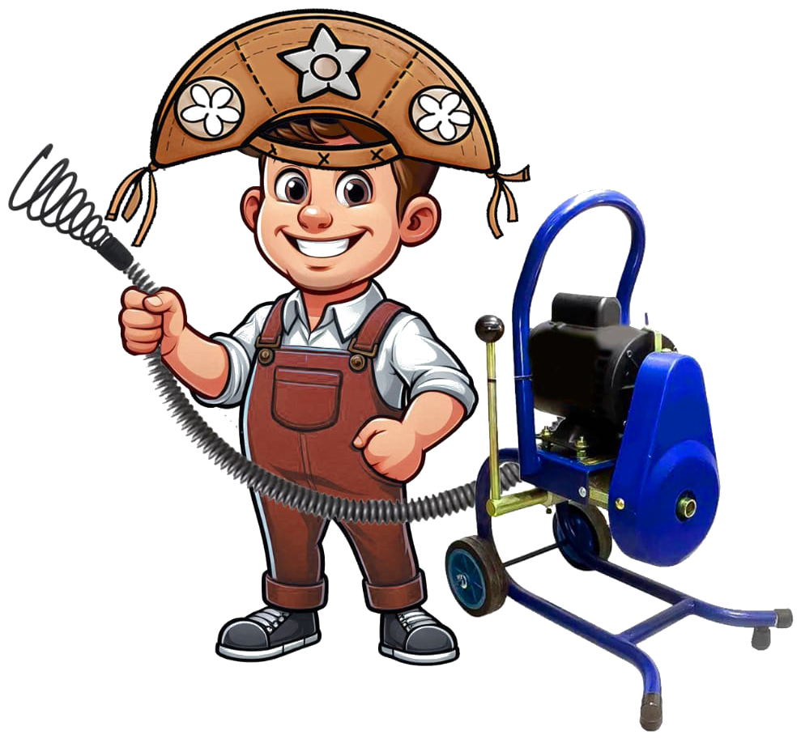
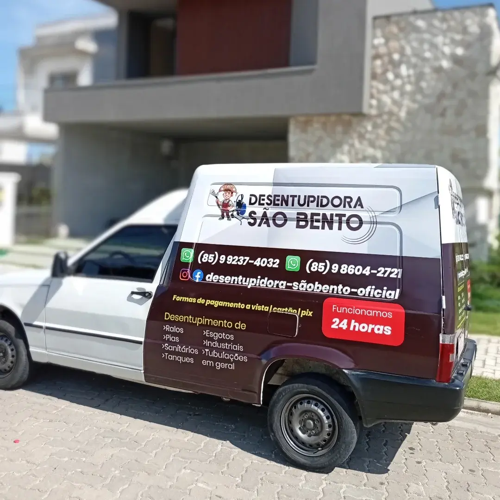
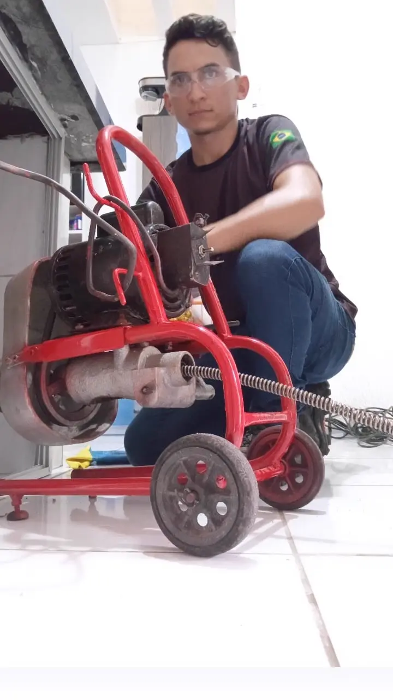
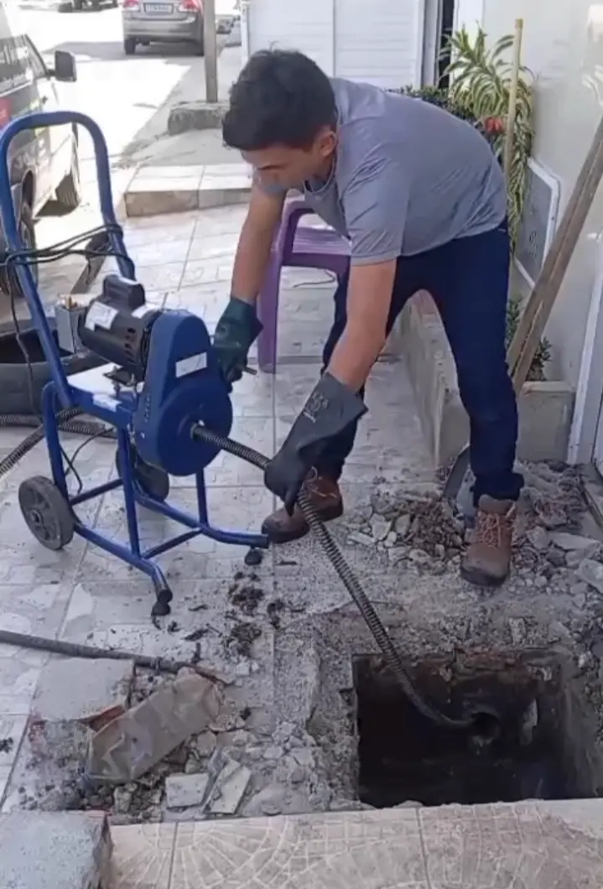

Especialistas em desentupimentos residenciais, condomínios e comerciais em Fortaleza e RMF. Maquinário rotativo elétrico K-50 e caminhão que resolvem rápido sem quebrar pisos ou paredes.
Atendimento rápido com maquinário moderno e técnicos uniformizados e identificados.
Estrutura operacional própria pronta para atender qualquer chamado em Fortaleza e RMF.

Viatura de AtendimentoEquipadas com máquinas desobstrutoras elétricas K-50 e K-500 prontas para atendimento imediato.
Capacidade para atender desde entupimentos simples até redes de esgoto prediais e condomínios.

Técnico em AçãoTécnicos treinados, uniformizados e utilizando EPIs adequados para máxima higiene e segurança.

Tecnologia K-50Sondas flexíveis de precisão que removem raízes, gordura e objetos sem necessidade de quebra.
Atendimento ágil e sob medida para cada tipo de imóvel.
Transparência total e respeito ao cliente: saiba como trabalhamos.
No mercado de desentupidoras, é comum empresas de má-fé cobrarem valores astronômicos calculando "por metro de cabo inserido" sem autorização prévia.
Na Desentupidora São Bento, nós trabalhamos com preço fixo fechado: o técnico examina o local gratuitamente, informa o orçamento exato e você só autoriza se concordar.
Utilizamos máquinas desentupidoras rotativas com ponteiras específicas para cada tipo de obstrução (gordura, raízes, tecidos ou objetos rígidos).
As sondas flexíveis fazem curvas de 90 graus dentro do cano, restaurando 100% do diâmetro original da tubulação sem necessidade de qualquer quebra.
Todos os nossos serviços contam com garantia formal de até 90 dias com emissão de nota fiscal para pessoas físicas, empresas e condomínios.
Caso ocorra qualquer anormalidade no período da garantia, nosso retorno técnico é imediato e prioritário sem nenhum custo adicional.
Com viaturas volantes estrategicamente distribuídas pelos bairros (Aldeota, Messejana, São Bento, Parquelândia, Papicu, Maraponga e Eusébio).
Garantimos tempo de resposta médio de 20 a 35 minutos para que você não passe o dia com esgoto transbordando.
Avaliações reais de quem confiou na Desentupidora São Bento na hora do aperto.
"O vaso entupiu num domingo com a casa cheia. Liguei para a São Bento e em meia hora o técnico chegou aqui na Aldeota. Preço justo, super educado e resolveu em 20 minutos sem sujar nada."
"Sou síndico de um prédio em Messejana e a coluna de esgoto do térreo transbordou à noite. A equipe veio com o maquinário e desobstruiu na hora. Extremamente profissionais, recomendo."
"O melhor diferencial foi o orçamento antes de começar. Já caí no golpe de pagar por metro com outra empresa e quase tive um infarto. A São Bento deu o valor certo e cumpriu. Nota 10!"